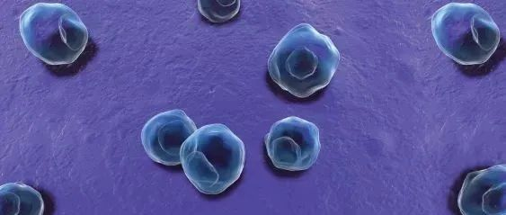

免费测衣原体感染+艾滋梅毒乙肝丙肝
爱同行与深圳市慢性病防治中心合作，免费为深圳基友提供衣原体感染的筛查和治疗（筛查阳性免费治疗），加上原先的艾梅乙丙，总共免费检测项目多达五项，仅限3月和4月，欢迎预约。
衣原体是一类能通过细胞滤器，有独特发育周期、严格细胞内寄生的原核细胞型微生物。主要是通过性接触传播，进入生殖道后，喜欢进入粘膜细胞内生长繁殖，在女性引起子宫内膜炎、输卵管炎、盆腔炎、尿道炎等。在男性可引起尿道炎、附睾炎、直肠炎等炎症。女性感染沙眼衣原体，会引起不孕、异位妊娠(宫外孕)、流产、死胎、胎膜早破、早产等。

爱同行是同志防艾机构，立足罗湖，在深圳、惠州两地提供线下HIV免费筛查和辅助确诊治疗，为广东省内基友提供在线HIV梅毒自我检测服务包申请邮寄，为全网恐艾（收费服务）、HIV感染者提供心理支持服务。
公交：田贝公交总站、田贝1、翠竹万家
地铁：田贝D、E出口
深圳市慢性病防治中心，是深圳市卫生健康委员会直属公共卫生机构，是全市公共卫生体系的主要组成部分，承担全市慢性传染性疾病和慢性非传染性疾病预防与控制、诊疗和健康管理工作。在全市医院中最早创立彩虹门诊，为基友提供无歧视的HIV和性病诊疗服务。